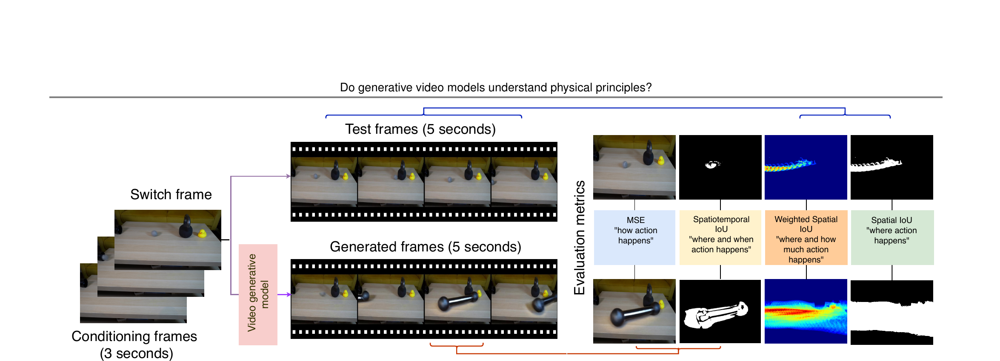

Do Generative Video Models Understand Physical Principles?
Motamed 等 · WACV 2026 · arXiv:2501.09038 v3 · 常称 Physics-IQ · Zotero 3AZMDPIH
Physics-IQ 给模型一段真实物理事件的起始帧，让它续写约 5 秒，再把生成物体轨迹/区域与真实后续对齐；它测的是对现实未来的预测，而非让 VLM 回答一道物理选择题。
§1 Introduction：视频续写能否迫使模型真正使用物理原则
关于视频模型是否学到“世界模型”的争论常停留在漂亮样例或文本物理题。文本回答可依赖语言记忆，开放 prompt 视频又缺唯一可比较未来。Physics-IQ 选择更严格的预测任务：给模型一个真实物理事件的开端，让它续写后续，再与同一实验的真实轨迹比较。
数据覆盖 solid mechanics、fluid dynamics、optics、thermodynamics 和 magnetism，共 66 类受控场景，并保留同场景物理变化。评测结合空间位置、时间演化、语义与 perceptual 指标，目的是区分“生成看起来合理的通用运动”和“根据初始条件预测这次事件”。
展开原文 · 核心问题
“Do video models learn physical principles?”
§2 Related Work：VQA、合成物理与真实视频预测
Physion、CLEVRER、PhyWorld 等合成数据能精确控制参数并提供符号标签，但与网络视频分布差异大，模型可能因渲染域而失败。物理 VQA 主要测结果分类或语言解释，不要求产生完整时空演化。通用视频 benchmark 又常缺同事件真实 future。
Physics-IQ 用真实受控实验兼顾自然视觉和可重复 ground truth。不过单次真实轨迹仍只是随机物理过程的一个样本，像液体飞溅等现象具有多解性；因此必须联合轨迹/结构指标，而非只做逐像素对齐。
§3 受控真实事件
§4 从生成到轨迹对齐

1. 截断真实视频
只给物理事件起点。
输入是什么：相机图像或视频，加上任务指令和机器人当前状态。它们还是原始观测，模型尚未把它们变成可用于预测或控制的特征。
这一步究竟做什么：本步骤执行“截断真实视频”。具体来说，只给物理事件起点。 它控制模型究竟看到什么、需要预测什么，避免后续比较因为输入长度或难度不同而失去意义。
输出到哪里：经过本步骤处理、含义更明确的中间结果。这个结果会交给下一步“模型续写未来”继续处理。
为什么不能省略：它把未经处理的原始问题变成后续模块可以计算的输入，是整条链路的起点。
2. 模型续写未来
生成长度与目标对齐。
输入是什么：来自上一步“截断真实视频”的产物：经过本步骤处理、含义更明确的中间结果。本步骤还会按论文设置读取当前条件、时间步或训练信号。
这一步究竟做什么：本步骤执行“模型续写未来”。具体来说，生成长度与目标对齐。 模型从相同起点产生候选未来，后续模块再检查这些未来是否符合条件、物理规律或动作需要。
输出到哪里：一个或多个候选未来、动作或轨迹，以及必要的中间状态。这个结果会交给下一步“提取对象时空状态”继续处理。
为什么不能省略：它承担上下两步之间的接口；缺少它，前一步产生的信息无法以正确格式或正确含义传到下一步。
3. 提取对象时空状态
把像素视频转成可比较物理量。
输入是什么：来自上一步“模型续写未来”的产物：一个或多个候选未来、动作或轨迹，以及必要的中间状态。本步骤还会按论文设置读取当前条件、时间步或训练信号。
这一步究竟做什么：本步骤执行“提取对象时空状态”。具体来说，把像素视频转成可比较物理量。 这里处理的只是整条链路中的一个接口：把上一步的结果整理成下一步能够正确读取和继续计算的形式。
输出到哪里：经过本步骤处理、含义更明确的中间结果。这个结果会交给下一步“对齐真实未来”继续处理。
为什么不能省略：它承担上下两步之间的接口；缺少它，前一步产生的信息无法以正确格式或正确含义传到下一步。
4. 对齐真实未来
同时看位置、时间与形状误差。
输入是什么：来自上一步“提取对象时空状态”的产物：经过本步骤处理、含义更明确的中间结果。本步骤还会按论文设置读取当前条件、时间步或训练信号。
这一步究竟做什么：本步骤执行“对齐真实未来”。具体来说，同时看位置、时间与形状误差。 它把原本模糊的‘看起来对不对’拆成可重复计算或人工核对的判断，从而让不同模型能在同一标准下比较。
输出到哪里：一组诊断数值、分类结果或评测分数；它告诉后续模块当前结果哪里好、哪里需要修正。这是图中这条链路的最终产物，随后会进入真实执行、模型更新或指标评测。
为什么不能省略：它把前面得到的内部结果落实为可执行动作、可训练模型或可解释指标，完成从方法到结果的最后一步。
§5 指标族
| Spatial IoU | 每帧目标区域位置与形状重合。 |
| Spatiotemporal IoU | 把整段轨迹视为时空体比较。 |
| Weighted Spatial IoU | 对关键时间/区域加权，减少背景主导。 |
| MSE | 连续轨迹或状态偏差。 |
§6 比文本物理题更接近 world model
正确回答“球会下落”不代表能生成球的落点和时间。Physics-IQ 强制模型给出像素级、时序一致的未来，因此更接近预测状态转移。
§7 局限
同一初态可能存在多模态合理未来，逐像素/逐轨迹对真实单样本会惩罚合理分叉；对机器人还需加入动作条件和可执行性。
§8 使用与复现：参考未来不是唯一未来
最小可信使用清单
- 分开报告 image-to-video 与 multi-frame conditioning。
- 固定输出时长、帧率、裁剪和随机采样数。
- 按五类物理领域与 66 个 scenario 分层。
- 同步报告 pixel/perceptual、对象轨迹和事件级指标。
- 人工检查高指标但物理错误、低指标但合理多解的反例。
Physics-IQ 的强处是“给真实开端，预测真实后果”；它比问答更接近 world model，但仍需正确处理随机未来和视觉域偏差。